No Crying in The Club (2018)
A family tree sprouts inside the corners of a frame. All that is inside reminds me of a time... Familiar leftovers of a song I used to recite in my sleep...'
In this project, I deal with my own history and changing relationship with home in Skopje, Macedonia. It was at the time, a summer of exploring my father's video camera together with tapes of my childhood. Taking these tapes, I filmed over them with new narratives of my family. Together, we retell stories and overwrite history with the same people, in the same place- 20 years later. The narrative tells of a storyteller, returning to a place that he was part of, a place he used to understand. Through ambiguous and emotional performances, the viewer is invited to take part on a vulnerable journey between imagination and memory.


 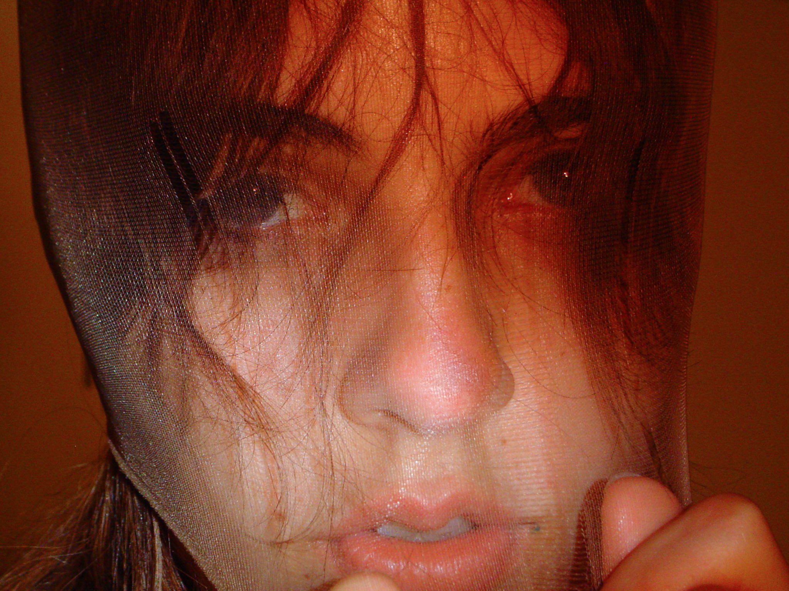
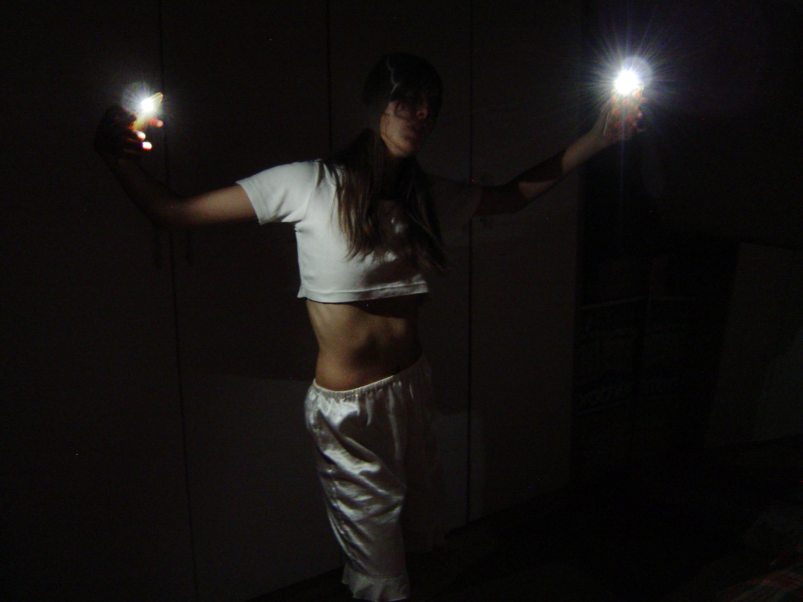
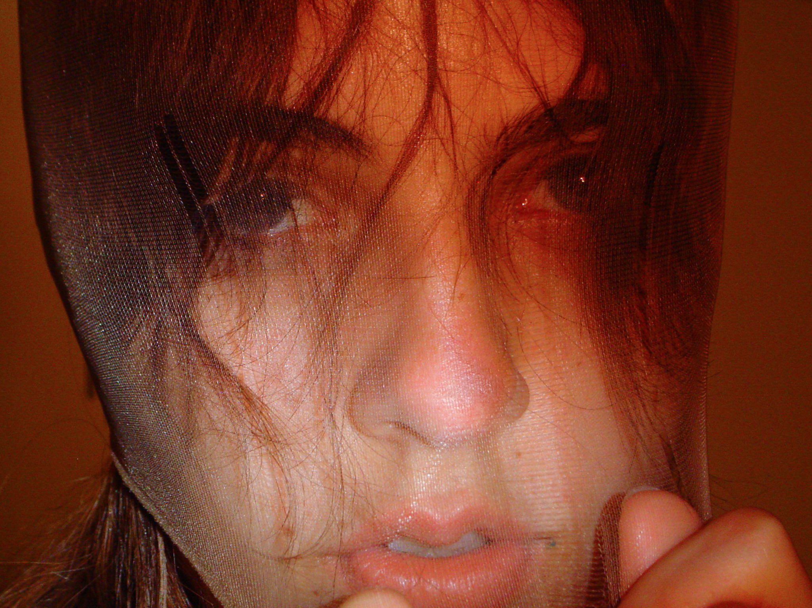
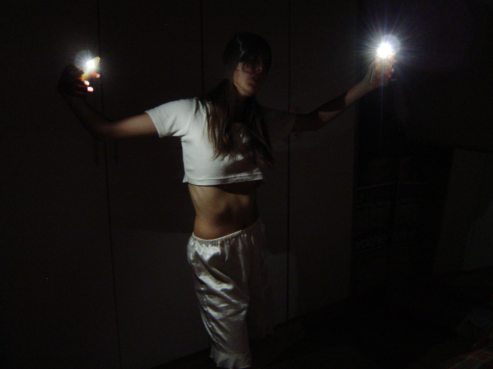


 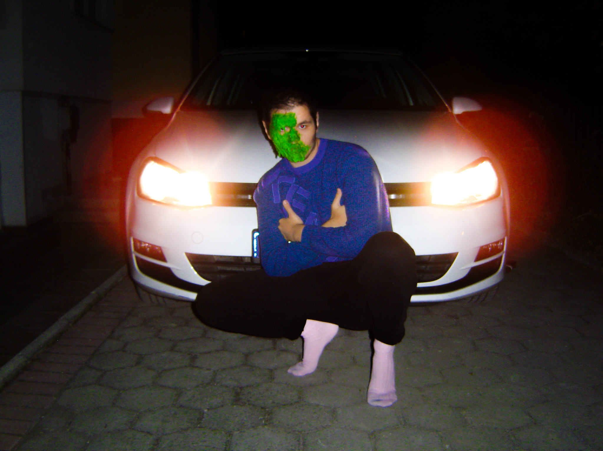
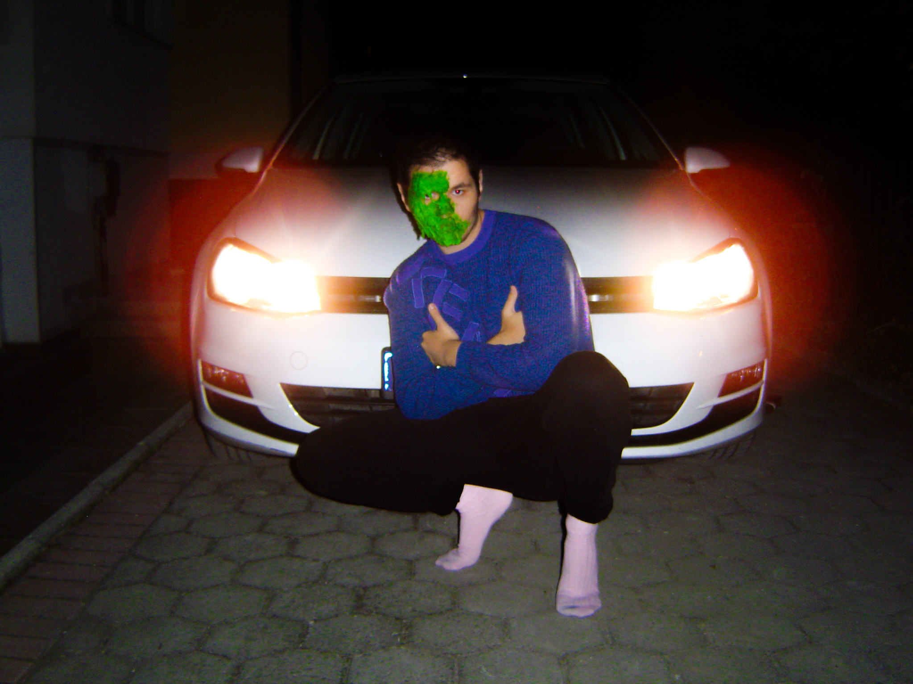


 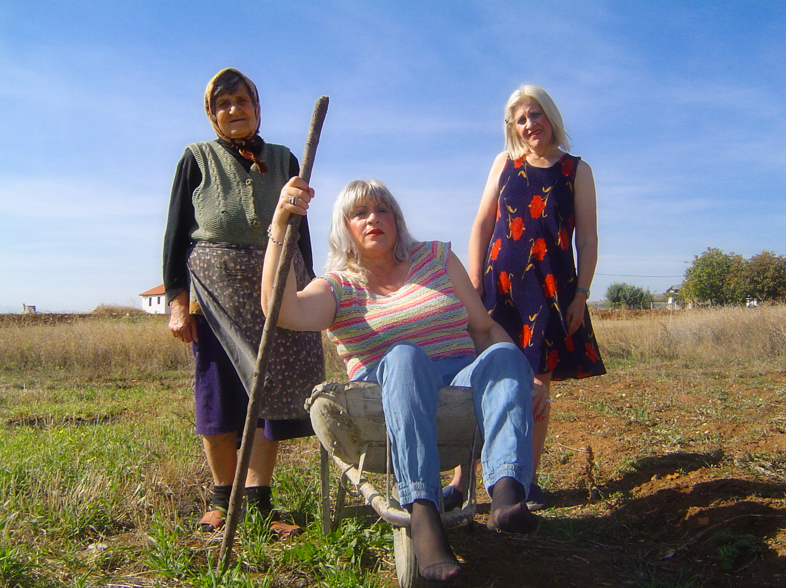
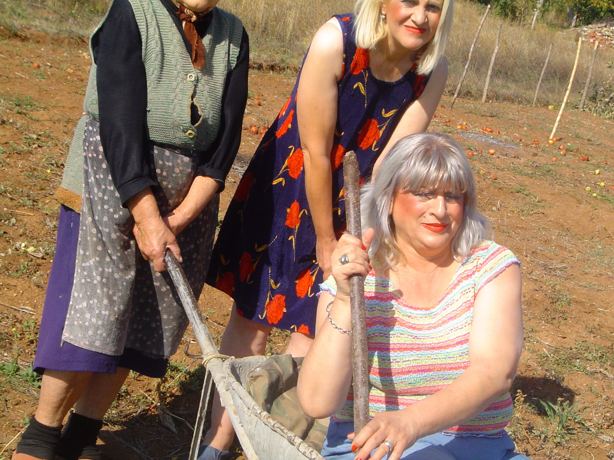
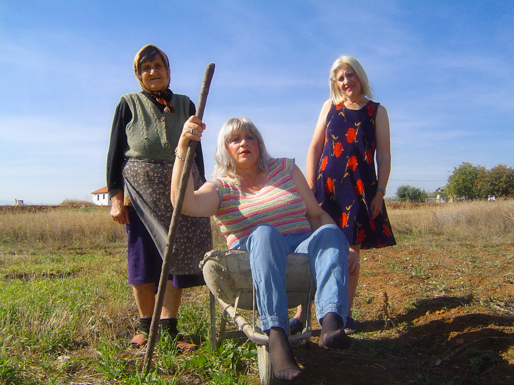
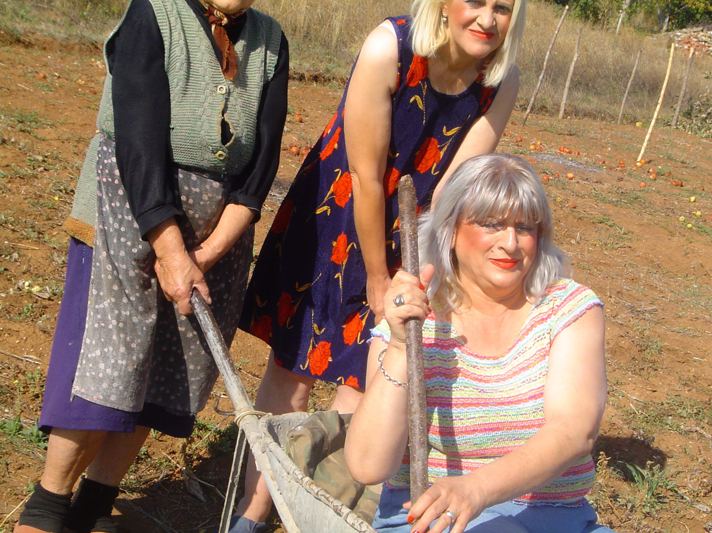


 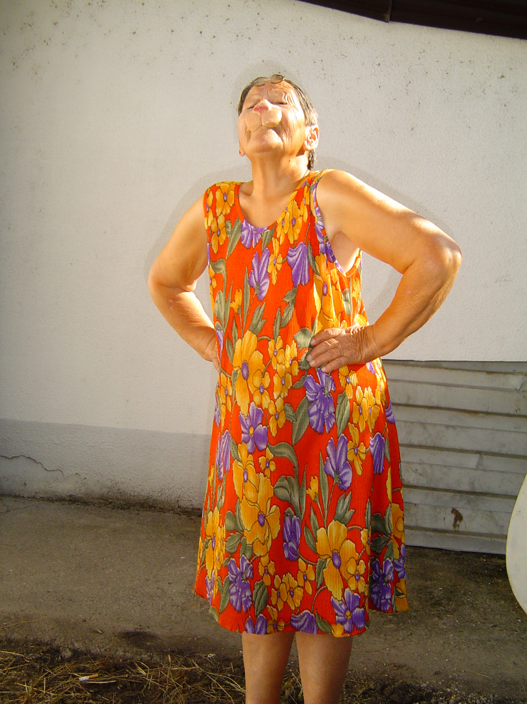
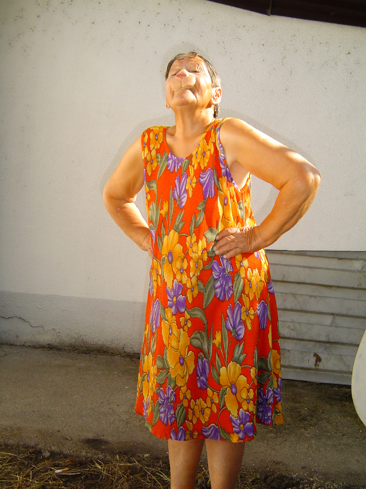


Act 1: A love song (2017)
A story about what once was. A fond memory of me trying to explain my dreams to my ex girlfriend. After time has passed, going back to that moment, and retelling what once was very personal and private, just as I remember it.
It consists of two parts, I photograph another person as I would photograph myself, while constantly going through the moment over and over in my head. Self reflection process. The second part completes the work- I am performing as myself, wearing a replica of my face. As I tell the story to the viewer, I show the photographs one by one. Every time, the order of photographs is different. In that way, a generic narrative will be formed, always similar but never the same.


Afterimage (2017)
Accordion content 3
Joker Makes Shooting Star (2016)
Accordion content 4
We Know What You Are Hiding (2017)
for Vogue Italia
Accordion content 3
4Magazine Cover Story (2017)
Accordion content 4
Get Set (2017)
Accordion content 3
We All Had Better Days (2016)
Accordion content 4